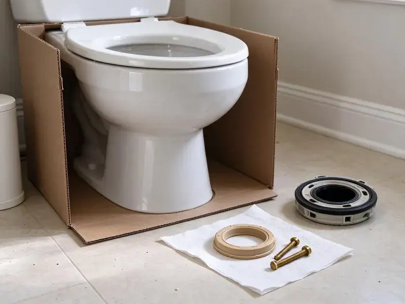

Sink Repair in North Miami, FL
Dealing with a leaky or clogged sink in North Miami, FL? HDF Plumbing is ready to provide professional sink repair solutions.
- Same-Day Sink Repair Service
- Honest Pricing
- Upfront Flat-Rate Pricing
- Licensed & Insured

Slow Drain or Hidden Leak? Get It Fixed in North Miami, FL.
Don't let a leaky or clogged sink ruin your day, contact HDF Plumbing for prompt service.
Professional Sink Repair in North Miami, FL Homes
HDF Plumbing repairs the parts of a bathroom sink that actually fail: P-traps, slip-joint washers, pop-up drain assemblies, braided supply lines and the mounting that holds the basin in place. We find the source of the water on the cabinet floor instead of just tightening a nut and hoping for the best. Most repairs in North Miami are done in under two hours.
Our expertise includes:
- Repairing leaky faucets and drains.
- Repairing garbage disposal issues.
- Replace leaking P-traps, tailpieces and slip-joint washers

Additional Bathroom Plumbing Services in North Miami, FL
From toilets to showers, our bathroom plumbing team in North Miami, FL repairs, installs, and replaces every fixture with clean, code-compliant work.


Customers
Why Choose HDF Plumbing for Sink Repair in North Miami, FL?
Our team is ready to handle everything from minor drips to major plumbing overhauls, always focusing on quality workmanship and customer satisfaction.
- Quality Parts, We use durable, high-quality replacement parts for all repairs, providing reliability and longevity for your sink.
- Lasting Solutions, We don't just patch problems; we find the root cause to ensure a durable repair.
- Local Knowledge, We are familiar with common plumbing issues in North Miami, including those related to local water quality and building codes.
Citywide Coverage
No matter where your home is situated in North Miami, we're committed to providing prompt and efficient sink repair services. Our local presence ensures we can reach you fast.
Experienced Team
Our team of plumbers has extensive experience with all types of sink repair, from vintage pedestal sinks to modern undermount kitchen models. They've seen and fixed it all.
Safety-First Approach
At HDF Plumbing, safety is paramount in every sink repair we do in North Miami. We adhere strictly to all local plumbing codes and safety standards to protect your home and ensure the integrity of your plumbing system.
Trusted Certified North Miami Plumbing Services Professionals
At HDF Plumbing, we take pride in providing certified plumbing services throughout North Miami, FL. Backed by recognized industry credentials, our experienced plumbers combine technical skill with genuine customer care. Whether it is repair, installation, or maintenance, we follow strict safety and quality standards to deliver lasting results you can trust.
Call Us Now PHCC Plumbing Contractor Recognition
PHCC Plumbing Contractor Recognition Better Business Bureau (BBB) Accreditation
Better Business Bureau (BBB) Accreditation Angi Certified Pro
Angi Certified Pro ISO 9001 Quality Management Certification
ISO 9001 Quality Management CertificationTrusted Sink Repair Services in North Miami, FL
Clogged Sink Drain Repair in North Miami, FL
A slow or completely blocked sink drain is a common nuisance in North Miami homes. This can be caused by grease, food particles, hair, or even mineral buildup from hard water. Our plumbers use professional tools like augers and hydro-jetting equipment to safely and effectively clear even the toughest clogs, restoring proper drainage to your kitchen or bathroom sink in Florida.

Emergency Sink Repair in North Miami, FL
A burst pipe under the sink or a major leak requires immediate attention to prevent water damage to your North Miami home. HDF Plumbing offers emergency sink repair services for urgent situations. Our rapid response team is available to address critical sink issues quickly and effectively, minimizing damage and restoring peace of mind in Florida.
Sink Parts Replacement in North Miami, FL
Sometimes, a full sink replacement isn't necessary; only specific parts need attention. HDF Plumbing offers targeted sink parts replacement services in North Miami, FL, including P-traps, supply lines, aerators, strainers, and pop-up stoppers. We use high-quality, durable components that match your existing fixtures and meet all local plumbing codes. This targeted approach saves you money and extends the life of your current sink, making it a cost-effective repair option.
Slow Drain and Clog Clearing in North Miami
Bathroom sinks clog with hair, soap scum and toothpaste mixed with mineral scale. We pull the stopper, clean the overflow channel, and clear the trap and branch line with a hand auger instead of caustic chemicals. If the clog sits past the wall, we check whether a shared line with the tub or shower is the actual problem. You end up with a sink that drains at full speed.
Leaking P-Trap Repair in North Miami
Most puddles under a bathroom sink start at the P-trap. Slip-joint washers flatten over time, plastic traps crack, and old chrome traps rust through from the inside. We replace the trap with a properly sized 1-1/4 inch assembly, align the tailpiece and wall arm, and run water to confirm a dry seal. This is one of the fastest and least expensive fixes we do.
Bathroom Sink Repair in North Miami, FL
Bathroom sinks often develop issues such as slow drains due to hair and soap scum buildup, leaky pop-up assemblies, or loose faucet handles. HDF Plumbing provides targeted repair services for all types of bathroom sinks, including pedestal, wall-mount, and vanity styles. We can replace corroded washers, adjust drain stoppers, or fix supply line leaks, bringing your bathroom plumbing back to good condition. We ensure all repairs meet Florida plumbing standards for residential properties.
Sink Repair vs Replacement Costs in North Miami, FL
A trap, stopper or supply line repair typically runs a fraction of the cost of a new sink. Replacement starts to make sense when the basin is cracked, the finish is badly etched, or the drain body is corroded into the bowl. We give you both prices when it is close so you can decide. Many customers save money by repairing now and planning an upgrade later.

Fixing Loose or Wobbly Sinks in North Miami
Over time, sinks can become loose or wobbly, particularly if they are undermounted or pedestal styles. This can be due to failing caulk, loose mounting clips, or even issues with the countertop. Our plumbers in North Miami can re-secure your sink, making sure it's stable and properly sealed to prevent water infiltration and further damage to your cabinetry or flooring.
Sink Repair Near Me in North Miami, FL
Looking for 'sink repair near me' in North Miami, FL? HDF Plumbing is your local plumbing expert, just a call away. Our technicians are strategically located to provide rapid response times throughout the area, ensuring your sink issues are addressed quickly and efficiently. We are committed to serving our community with reliable plumbing solutions.
When you search for sink repair near me, you want a plumber who shows up on time and fixes it once. Our trucks are already working in North Miami most days, so response times stay short. We call ahead with an arrival window and stick to it.
HDF Plumbing at a Glance
- Fully licensed plumbing team covering North Miami, FL
- Same-day appointments and 24/7 emergency response
- Upfront, flat-rate pricing before work begins
- 4.9-star rated by 739+ Florida customers
North Miami Map
North Miami Information
- Population
- 59,008
- Area codes
- 305/786/954
- Service area
- North Miami and communities within 40 miles
- Nearby
- Miami Gardens, Miami Beach, Hialeah, Hollywood
Many wells in Florida produce water with a sulfur smell or high iron, which often calls for treatment to protect fixtures and appliances. Warm vanity cabinets also wear out sink seals, stoppers and supply lines sooner, so prompt sink repair protects North Miami, FL homes from hidden cabinet and floor damage.
Expert Services
Trust our professionals for reliable HDF Plumbing solutions in North Miami, FL.
Our Specialized Plumbing Services in North Miami, FL
At HDF Plumbing, we provide a complete range of plumbing services across North Miami, FL. From leak detection to full system installations, our team ensures fast, precise, and affordable service for both residential and commercial properties. Explore our core services below:


How Our Sink Repair Service Works in North Miami, FL
Our step-by-step approach to sink repair ensures that every step is handled professionally, from your initial call to the completion of the repair in your North Miami, FL home.
Request a Quote
Contact us at (904) 925-7356 or through our website to schedule your sink repair service. We'll gather information about your issue and set up an appointment that fits your schedule.
On-Site Diagnosis
Our skilled plumber will arrive on time, inspect your sink, and accurately diagnose the problem. We use specialized tools to identify hidden issues and explain the necessary repairs in plain terms.
Transparent Pricing
Before any work begins, you'll receive a detailed, upfront quote for the repair. We believe in transparency, so there are no hidden fees or surprises, just honest pricing.
Frequently Asked Questions About Sink Repair in North Miami
The cost of sink repair in North Miami typically ranges from $150 to $400, depending on the complexity of the issue. Simple fixes like clearing a minor clog might be on the lower end, while repairing a complex leak or replacing a faulty garbage disposal could be higher. We provide clear, upfront pricing after diagnosing the problem.
Yes, HDF Plumbing stands behind all our sink repair work with a comprehensive warranty on both parts and labor. We want you to have complete peace of mind knowing that your repair is done right and will last. Specific warranty details will be provided at the time of service.
Many wells in Florida produce water with a sulfur smell or high iron, which often calls for treatment to protect fixtures and appliances. Hard water contains high levels of minerals like calcium and magnesium that can accumulate in faucets, aerators, and drains, reducing water flow and causing clogs. We address this by cleaning or replacing affected components and can advise on water softening solutions if repeat issues are a concern for your North Miami home.
To prevent future sink issues, avoid pouring grease down drains, use drain strainers to catch food particles and hair, and run hot water for a minute after using your sink to help clear residue. Regular plumbing inspections can also catch small problems before they turn into major repairs.
We repair all types of residential and light commercial sinks, including kitchen sinks, bathroom sinks, utility sinks, pedestal sinks, wall-mount sinks, drop-in sinks, undermount sinks, and even outdoor sinks. Our team is equipped to handle issues with various materials, from stainless steel to porcelain and composite.
Yes, our technicians are experienced in repairing all major sink and faucet brands, including Kohler, Moen, Delta, American Standard, Pfister, and more. We carry a wide range of universal and brand-specific parts to ensure a proper and lasting repair for your specific fixture.
Absolutely. Even a small, persistent leak under a sink can lead to significant water damage over time, affecting cabinetry, flooring, and even fostering mold growth. A burst pipe or a major overflow can cause immediate and extensive damage, highlighting the importance of timely repair in your North Miami home.
Generally, minor sink repairs like fixing a leak or replacing a faucet do not need a permit in North Miami, FL. However, if the repair involves significant alterations to the existing plumbing system, moving drain lines, or replacing entire sections of pipe, a permit may be necessary. We can walk you through any permit requirements.
What People Are Saying About Our Plumbing Experts?

Emily R.
I called HDF Plumbing for plumbing repair, and the technician was fast, polite, and thorough. They explained the problem clearly and fixed it the same day. I will definitely hire them again. Highly recommended!
Plumbing Repair · Hollywood, FL
Mark T.
When our office needed drain cleaning, HDF Plumbing provided quick, reliable service. The plumber arrived on time and made sure every drain flowed perfectly before leaving. Very satisfied.
Drain Cleaning · Miami Gardens, FL
Robert G.
The trenchless sewer replacement saved our front yard. They walked us through the camera inspection footage first so we knew exactly what we were paying for.
Sewer Line Replacement · Country Club, FL
Patricia H.
We had a slab leak that two other companies could not find. HDF Plumbing located it in under an hour, explained our options, and the price matched the quote to the dollar.
Slab Leak Repair · Miami, FL
Laura S.
I scheduled a water heater replacement, and the team made the process smooth and affordable. The new unit works perfectly, and they cleaned up after completing the job.
Water Heater Replacement · Miami Beach, FLSofia M.
Two new toilets installed in one visit, no mess left behind, and the tech even adjusted a faucet he noticed was dripping. Fair pricing and really friendly.
Toilet Installation · Miami Beach, FL